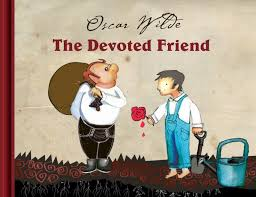

The Devoted Friend

One morning the old Water-rat put his head out of his hole. He had bright beady eyes and stiff grey whiskers, and his tail was like a long bit of black india-rubber. The little ducks were swimming about in the pond, looking just like a lot of yellow
canaries, and their mother, who was pure white with real red legs, was trying to teach them how to stand on their heads in the water.'You will never be in the best society unless you can stand on your heads,' she kept saying to them; and every
now and then she showed them how it was done. But the little ducks paid no attention to her. They were so young that they did not know what an advantage it is to be in society at all.'What disobedient children!' cried the old Water-rat; 'they
really deserve to be drowned.''Nothing of the kind,' answered the Duck, 'every one must make a beginning, and parents cannot be too patient.''Ah! I know nothing about the feelings of parents,' said the Water-rat; 'I am not a family man. In fact,
I have never been married, and I never intend to be. Love is all very well in its way, but friendship is much higher. Indeed, I know of nothing in the world that is either nobler or rarer than a devoted friendship.''And what, pray, is your idea
of the duties of a devoted friend?' asked a Green Linnet, who was sitting in a willow-tree hard by, and had overheard the conversation.'Yes, that is just what I want to know,' said the Duck, and she swam away to the end of the pond, and stood
upon her head, in order to give her children a good example.'What a silly question!' cried the Water-rat. 'I should expect my devoted friend to be devoted to me, of course.''And what would you do in return?' said the little bird, swinging upon
a silver spray, and flapping his tiny wings.'I don't understand you,' answered the Water-rat.'Let me tell you a story on the subject,' said the Linnet.'Is the story about me?' asked the Water-rat. If so, I will listen to it, for I am extremely
fond of fiction.''It is applicable to you,' answered the Linnet; and he flew down, and alighting upon the bank, he told the story of The Devoted Friend.'Once upon a time,' said the Linnet, 'there was an honest little fellow named Hans.'
>
GOTO TO SECOND PAGE